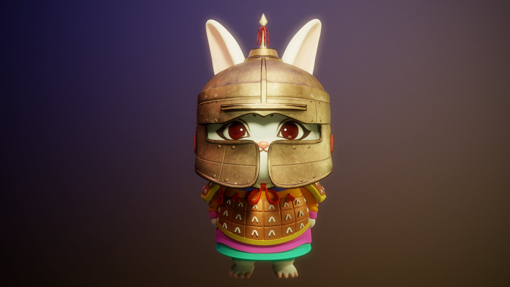
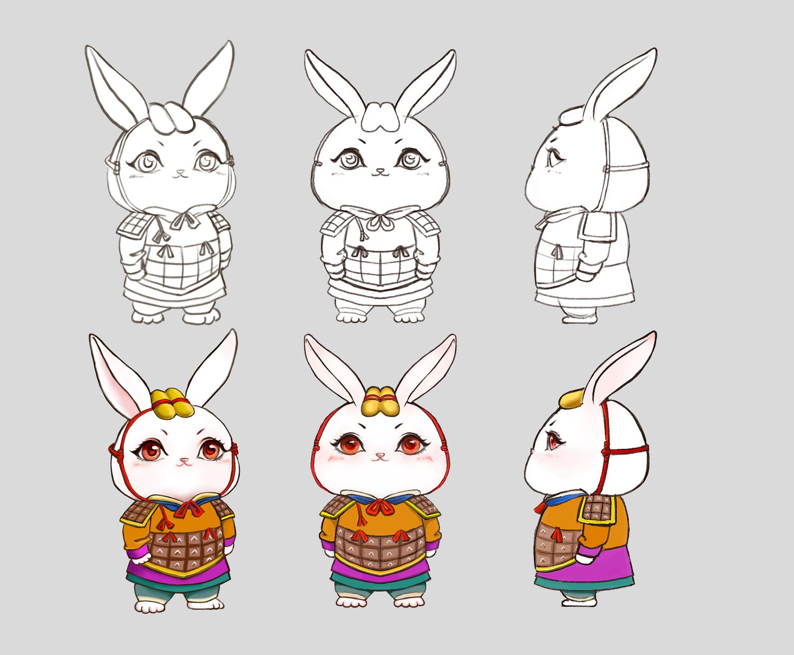
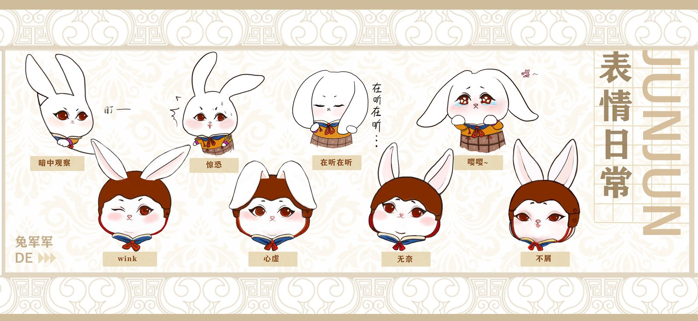
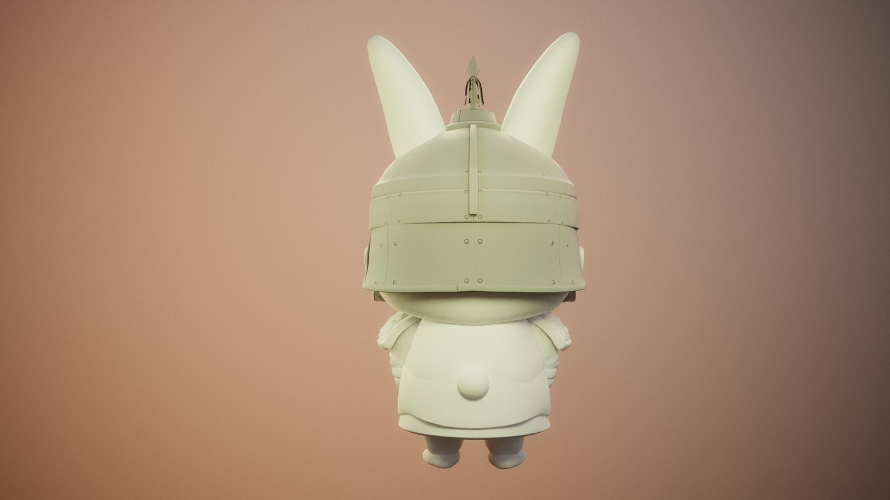
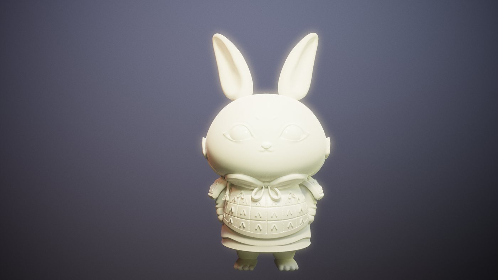
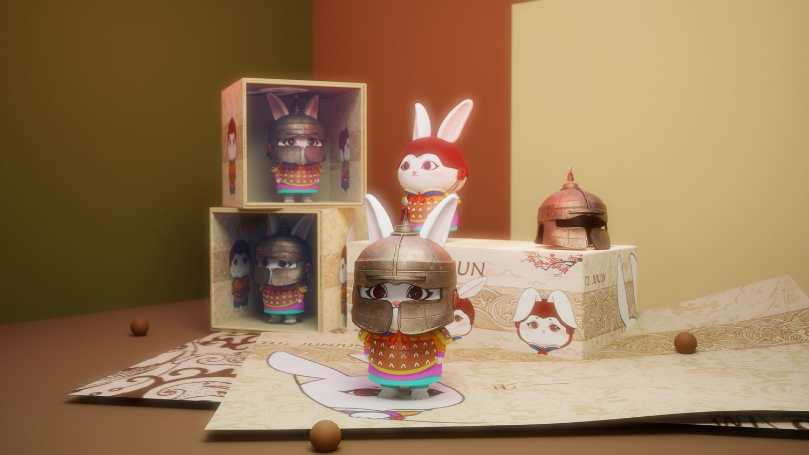
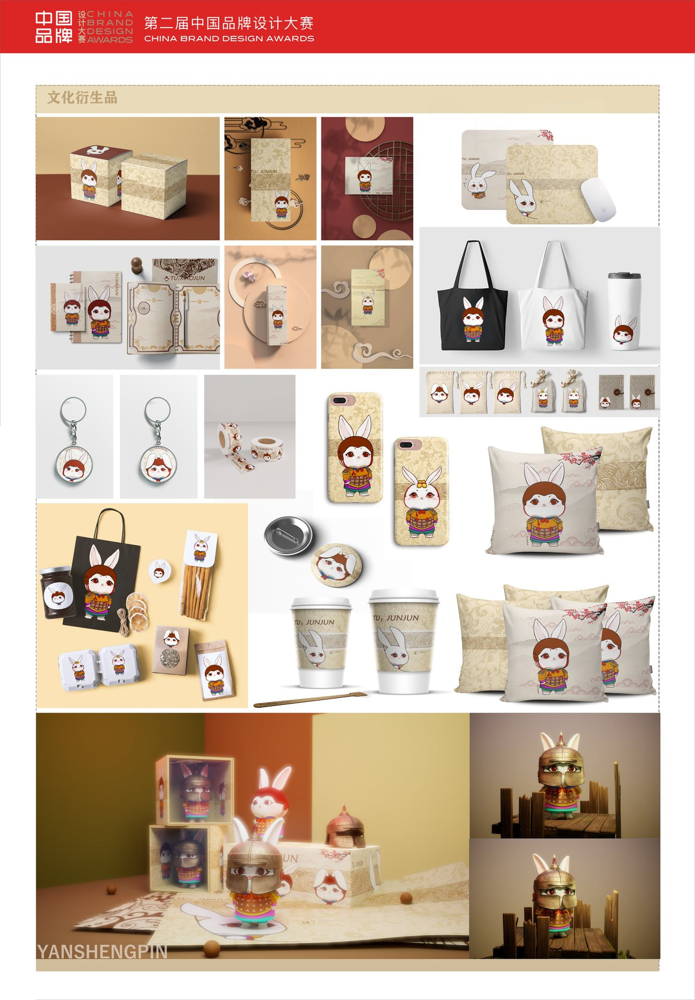
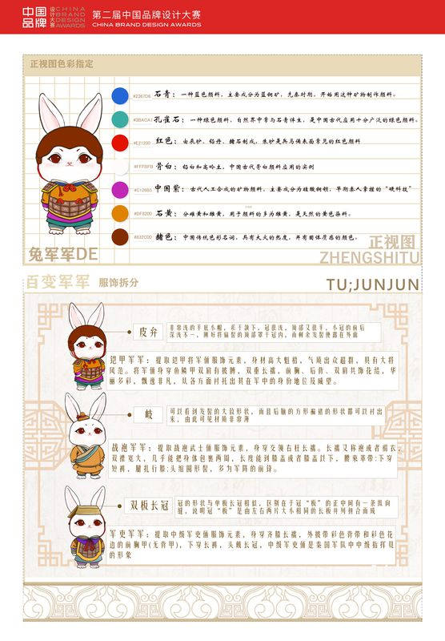
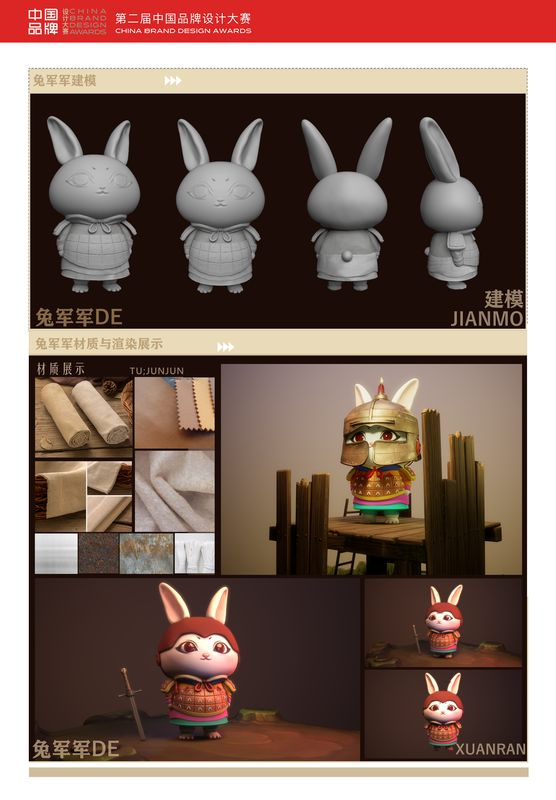

More Projects — 查看更多作品

项目角色：形象设定 · 三视图绘制 · 三维建模与渲染 · 打样与实物制作 · 展板与衍生品设计 —— 一个从文化符号提炼、到可以拿在手里的完整 IP 落地过程。
秦兵马俑是高度成熟的文化符号，但它太「重」了——铠甲的重量、军阵的肃穆、历史的距离感， 让它在年轻人语境里难以亲近。「兔军军」要解决的是这个问题：在不消解文化信息的前提下，把兵马俑变轻。
选择兔子作为载体，是因为它的形象反差足够大——把秦俑的甲胄、冠饰、发髻结构完整移植到兔子身上， 庄重的军阵气质与兔子的可爱体态形成张力，文化识别度与亲和力同时保住了。
形象先以线稿推敲体态与甲胄比例，再确定配色方案。核心是让「秦」的元素可读： 甲片的层叠方式、冠饰轮廓、系带结构均取自兵马俑实物，而不是泛泛的古代装束。
同一套形象还延展出一组夸张化的表情体系，用于社交场景与周边应用—— 这让 IP 既有严肃的文化来源，也具备日常传播的弹性。


按手办的落地标准建模：甲片厚度、头盔可拆结构、站立重心与分件方式都在建模阶段一并考虑， 保证后续可以真实打样，而不是只停留在渲染图。


IP 不止于图。形象最终落地为手办实物与一整套衍生品，并整理成完整展板用于展览与评审—— 从设定、建模、打样到包装陈列，走完一个 IP 产品化的完整链路。




注：该形象在不同赛事中按主办方要求分别以《兔军军》《兵兵兔》名义送评，为同一套设计。
「兔军军」是我最早一次完整做完文化转译的项目：找到一个足够重的文化原型（秦兵马俑）， 再找到一个足够轻的载体（兔子），中间的每一步——设定、建模、打样、陈列——都不能偷懒， 否则文化信息会在转译过程中流失。 这条思路后来一直延续到「云鬓花颜」：先尊重原型的准确性，再谈表达的亲和力。